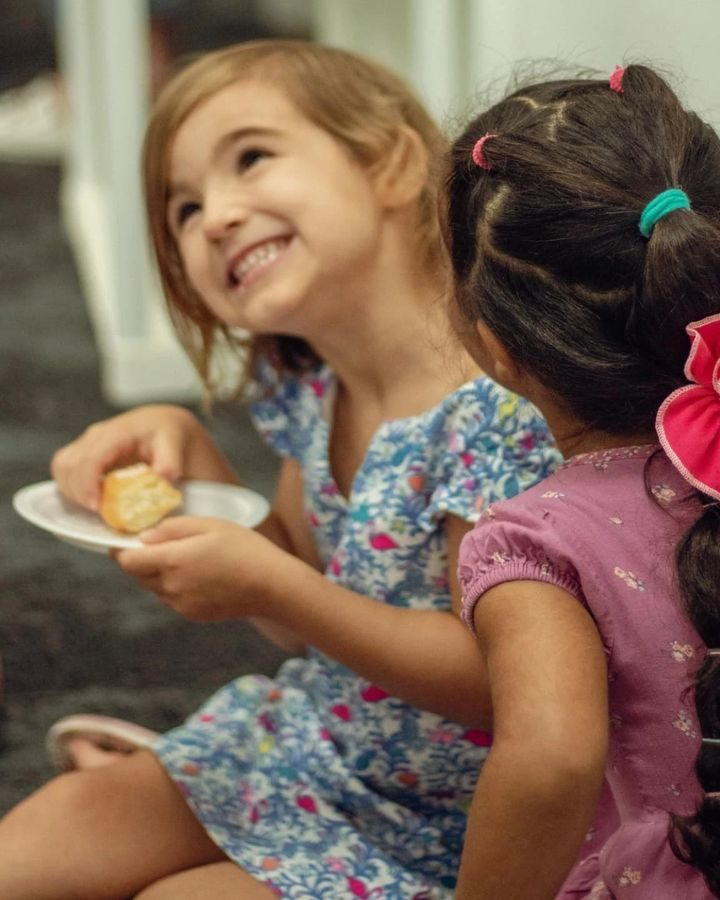
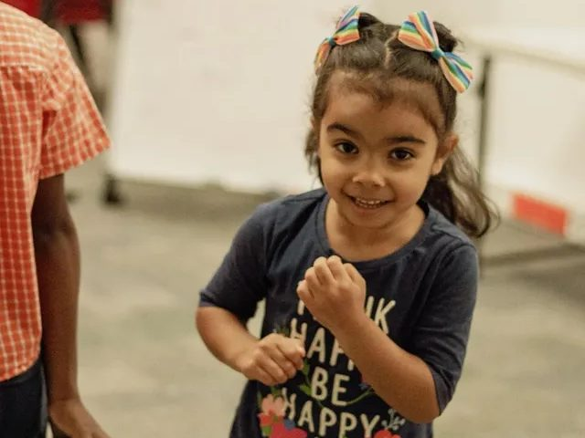
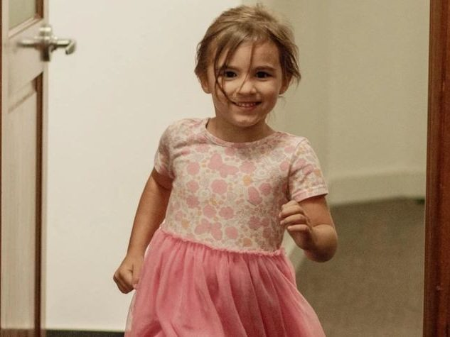

Your kids get their own morning.
BridgeKids runs during the Sunday service in a room just for kids, right at the back. Two adults are always in the room.

- Ages
- 4 to 11Under 4s and over 11s stay with you
- When
- SundaysDuring the 10:00 AM service
- In the room
- Two adultsAlways. It’s a rule at BridgeKids.
Find your child’s age
- Under 4
- Stays with you in the service. It happens every week and nobody minds.
- Ages 4 to 11
- BridgeKids, in a room just for kids at the back.
- 12 and up
- Sits in the service with you.
How Sunday morning works
- 10:00 AM
Kids sit in the service with everyone
- Announcements
They’re dismissed together to the BridgeKids room
- After the service
You pick them up
What they do while you’re in the service

Bible stories and lessons, made for their age

Two adults in the room, every Sunday
It’s a rule at BridgeKids.
What parents usually ask
Anything else? Grab anyone after the service.
My child is under 4. Can they come?
Yes. Children under 4 stay with you in the service. It happens every week and nobody minds.
When do kids go to BridgeKids?
Kids sit in the service with everyone at the start. During the announcements, BridgeKids is dismissed together.
Does my child have to go?
No. If your child would rather stay in the service with you, that’s fine.
Where is the BridgeKids room?
Right at the back, in a room just for kids.
Who is in the room with them?
Two adults are always in the room. It’s a rule at BridgeKids, every Sunday.
What do they learn?
Bible stories and lessons, taught in a way that fits their age.
When do I pick them up?
After the service ends.
Can I help with BridgeKids?
Yes. BridgeKids is looking for more volunteers. Grab anyone after the service to ask.